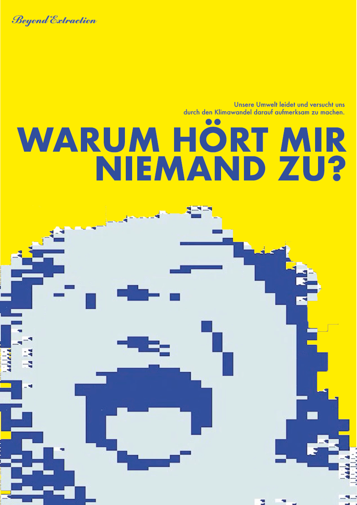
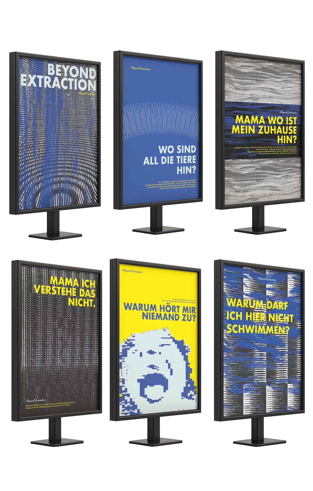

The task
We were in groups of six and had to choose an enviromental problem and make through processing an identity.
My interpretation
Beyond Extraction is an interdisciplinary awareness campaign that addresses the wasteful use of water as a symbol of natural resource exploitation. Although essential to life, water is often treated as an unlimited resource. The project translates this mindset into an emotional narrative, portraying water use as an intrusion into a living system.
The visual language contrasts organic, flowing forms with rigid industrial structures, symbolising the tension between nature and human control. Humans appear as water particles, highlighting the close interdependence between
people and water.
Sound design combines water samples, rhythmic movement and voice-over, shifting from natural to mechanical tones to emphasise the transition from
balance to exploitation.
My part:
Poster design
